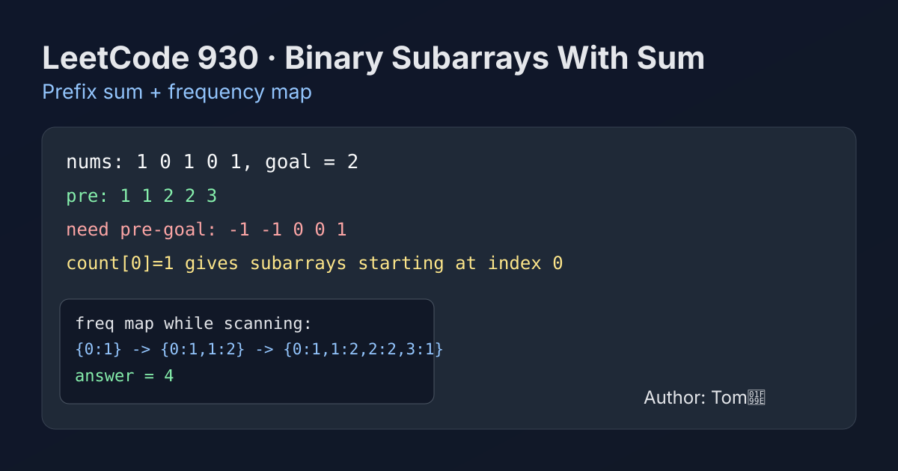

LeetCode 930: Binary Subarrays With Sum (Prefix Sum + Frequency Map)
LeetCode 930Prefix SumHash MapToday we solve LeetCode 930 - Binary Subarrays With Sum.
Source: https://leetcode.com/problems/binary-subarrays-with-sum/

English
Problem Summary
Given a binary array nums and an integer goal, count subarrays whose sum equals goal.
Key Insight
If current prefix sum is pre, then any previous prefix sum equal to pre - goal forms a valid subarray ending here. So we only need to track frequencies of prefix sums.
Algorithm
- Initialize map with count[0] = 1 (empty prefix).
- Scan array, update pre += nums[i].
- Add count[pre - goal] to answer.
- Increase count[pre].
Complexity Analysis
Time: O(n).
Space: O(n) in worst case.
Common Pitfalls
- Forgetting count[0] = 1, which misses subarrays starting from index 0.
- Updating frequency before querying pre - goal can overcount current position.
- Assuming only sliding window works, but it fails for general exact-sum counting when values are not all non-negative (prefix-sum method is robust).
Reference Implementations (Java / Go / C++ / Python / JavaScript)
class Solution {
public int numSubarraysWithSum(int[] nums, int goal) {
java.util.Map<Integer, Integer> freq = new java.util.HashMap<>();
freq.put(0, 1);
int pre = 0, ans = 0;
for (int x : nums) {
pre += x;
ans += freq.getOrDefault(pre - goal, 0);
freq.put(pre, freq.getOrDefault(pre, 0) + 1);
}
return ans;
}
}func numSubarraysWithSum(nums []int, goal int) int {
freq := map[int]int{0: 1}
pre, ans := 0, 0
for _, x := range nums {
pre += x
ans += freq[pre-goal]
freq[pre]++
}
return ans
}class Solution {
public:
int numSubarraysWithSum(vector<int>& nums, int goal) {
unordered_map<int,int> freq;
freq[0] = 1;
int pre = 0, ans = 0;
for (int x : nums) {
pre += x;
if (freq.count(pre - goal)) ans += freq[pre - goal];
freq[pre]++;
}
return ans;
}
};class Solution:
def numSubarraysWithSum(self, nums: list[int], goal: int) -> int:
freq = {0: 1}
pre = 0
ans = 0
for x in nums:
pre += x
ans += freq.get(pre - goal, 0)
freq[pre] = freq.get(pre, 0) + 1
return ansvar numSubarraysWithSum = function(nums, goal) {
const freq = new Map();
freq.set(0, 1);
let pre = 0, ans = 0;
for (const x of nums) {
pre += x;
ans += (freq.get(pre - goal) || 0);
freq.set(pre, (freq.get(pre) || 0) + 1);
}
return ans;
};中文
题目概述
给定一个二进制数组 nums 和整数 goal，统计和恰好等于 goal 的子数组数量。
核心思路
设当前前缀和为 pre，若之前存在前缀和 pre - goal，那么这两个前缀之间的子数组和就是 goal。因此我们只要维护前缀和出现次数即可。
算法步骤
- 初始化 count[0] = 1（空前缀）。
- 遍历数组并更新 pre += nums[i]。
- 把 count[pre - goal] 加入答案。
- 最后执行 count[pre]++。
复杂度分析
时间复杂度：O(n)。
空间复杂度：O(n)（最坏情况）。
常见陷阱
- 忘记初始化 count[0] = 1，会漏掉从下标 0 开始的答案。
- 先更新 count[pre] 再查询会导致当前位置被错误计入。
- 误以为必须用滑动窗口，实际上前缀和 + 哈希计数更通用、更稳定。
多语言参考实现（Java / Go / C++ / Python / JavaScript）
class Solution {
public int numSubarraysWithSum(int[] nums, int goal) {
java.util.Map<Integer, Integer> freq = new java.util.HashMap<>();
freq.put(0, 1);
int pre = 0, ans = 0;
for (int x : nums) {
pre += x;
ans += freq.getOrDefault(pre - goal, 0);
freq.put(pre, freq.getOrDefault(pre, 0) + 1);
}
return ans;
}
}func numSubarraysWithSum(nums []int, goal int) int {
freq := map[int]int{0: 1}
pre, ans := 0, 0
for _, x := range nums {
pre += x
ans += freq[pre-goal]
freq[pre]++
}
return ans
}class Solution {
public:
int numSubarraysWithSum(vector<int>& nums, int goal) {
unordered_map<int,int> freq;
freq[0] = 1;
int pre = 0, ans = 0;
for (int x : nums) {
pre += x;
if (freq.count(pre - goal)) ans += freq[pre - goal];
freq[pre]++;
}
return ans;
}
};class Solution:
def numSubarraysWithSum(self, nums: list[int], goal: int) -> int:
freq = {0: 1}
pre = 0
ans = 0
for x in nums:
pre += x
ans += freq.get(pre - goal, 0)
freq[pre] = freq.get(pre, 0) + 1
return ansvar numSubarraysWithSum = function(nums, goal) {
const freq = new Map();
freq.set(0, 1);
let pre = 0, ans = 0;
for (const x of nums) {
pre += x;
ans += (freq.get(pre - goal) || 0);
freq.set(pre, (freq.get(pre) || 0) + 1);
}
return ans;
};
Comments